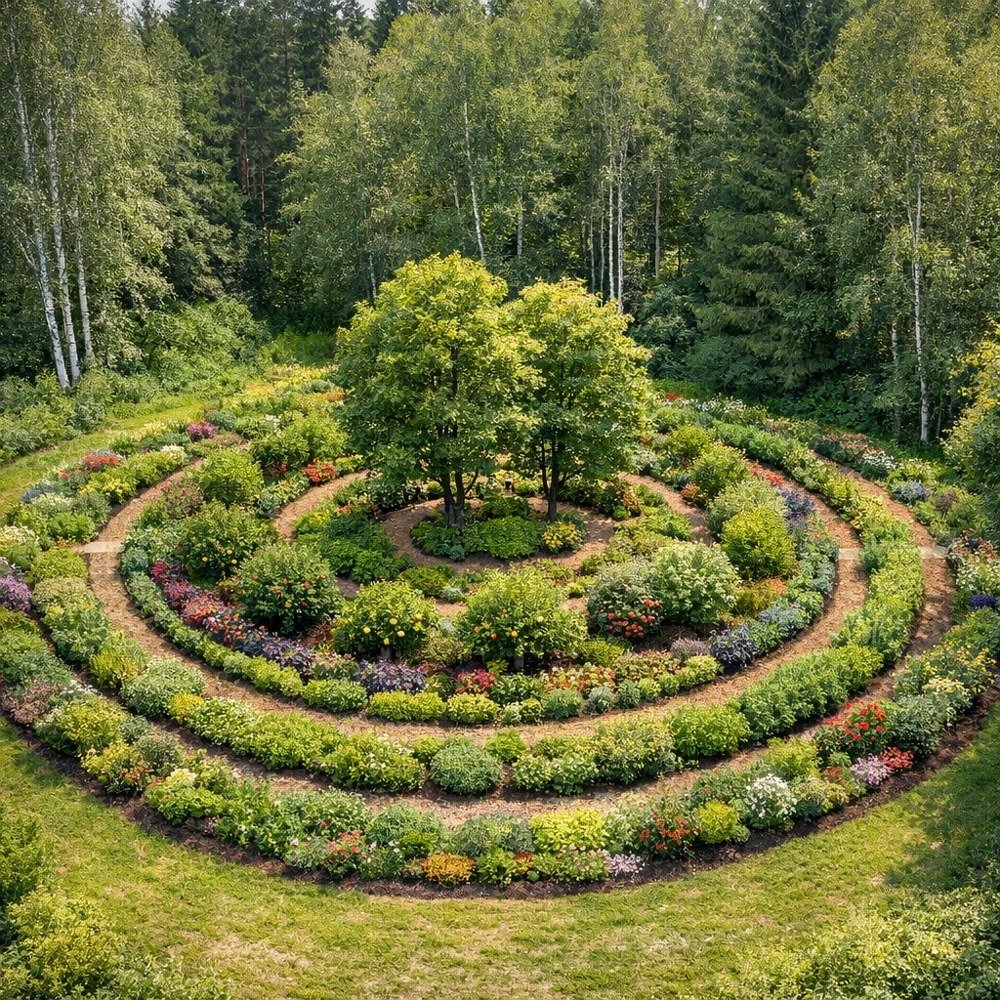
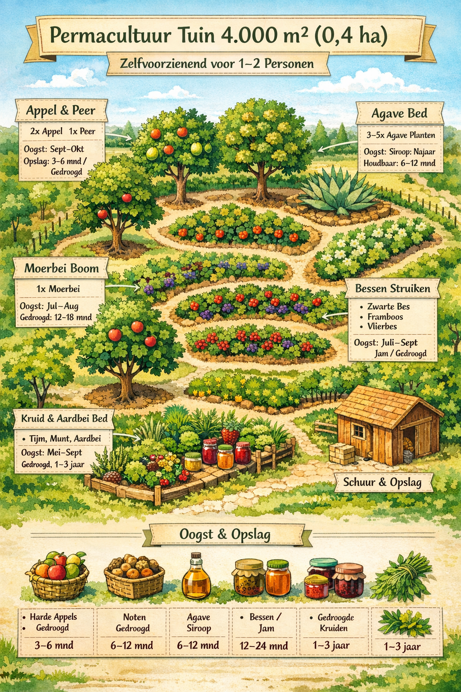

Doel: Een permacultuurplan voor eetbare bomen, struiken en kruiden die oogst leveren die makkelijk te conserveren is. Zo kun je een continue voorraad opbouwen zonder afhankelijkheid van elektriciteit.

Doel: Zelfvoorzienende, houdbare voedselproductie voor 1–2 personen met warmtetolerante suikerbron (bijvoorbeeld agave) en fruitbomen, noten, bessen en kruiden.
| Product | Jaarlijks gebruik per persoon | Oogst per boom/plant | Aantal planten |
|---|---|---|---|
| Appel | 50 kg | 25–30 kg | 2 |
| Peer | 30 kg | 15–20 kg | 2 |
| Moerbei | 20 kg | 10–15 kg | 2 |
| Vijg | 15 kg | 10–15 kg | 1–2 |
| Noten (hazelnoot/walnoot) | 10 kg | 2–3 kg | 4 |
| Agave americana | 2–5 liter siroop | Sap → koken tot siroop | 3–5 |
| Product | Jaarlijks gebruik per persoon | Oogst per struik | Aantal struiken |
|---|---|---|---|
| Zwarte / rode / aalbes | 20–25 kg | 2–3 kg | 8–10 |
| Vlierbes | 5 kg | 2–3 kg | 2–3 |
| Framboos / braam | 10–15 kg | 1–2 kg | 6–8 |
| Jujube | 5–10 kg | 2–3 kg | 2–3 |
| Product | Jaarlijks gebruik per persoon | Oogst per plant | Aantal planten |
|---|---|---|---|
| Tijm, rozemarijn, salie | 0,5–1 kg | 0,1–0,2 kg | 10–15 |
| Munt, bieslook, citroenmelisse | 1–2 kg | 0,1–0,2 kg | 10–15 |
| Bodembedekkers (aardbei, bosbes) | 5 kg | 0,2–0,5 kg | 10–15 |
